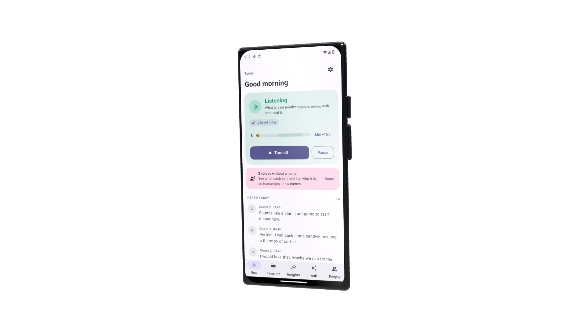

Under the ocean.
SubCom
Subsea cables
Into our homes.
Wyyerd Fiber
Fiber internet
Through the air.
BTI Solutions
5G and LTE
SubCom
Wyyerd Fiber
BTI Solutions
New chat · one of the first GPT models

Works in airplane mode
Software engineering, AI focus
Open-source Android apps
Automated tests
Pruitt Colon
AI engineer ·
open to full-time roles
whyhirepruitt.dev
About me · 1:27